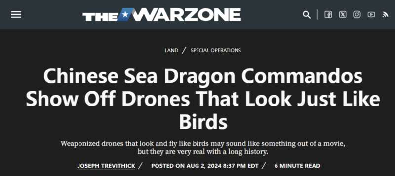
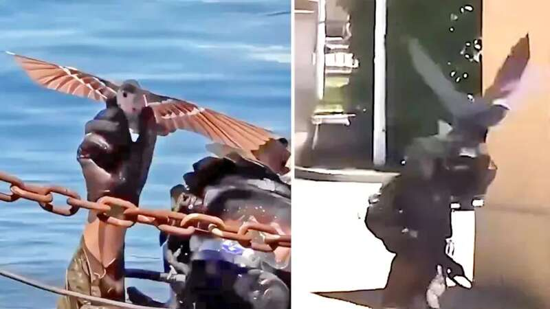
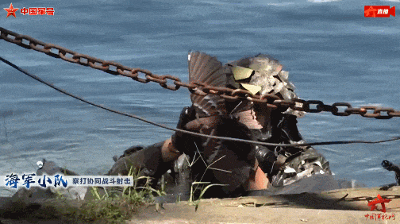
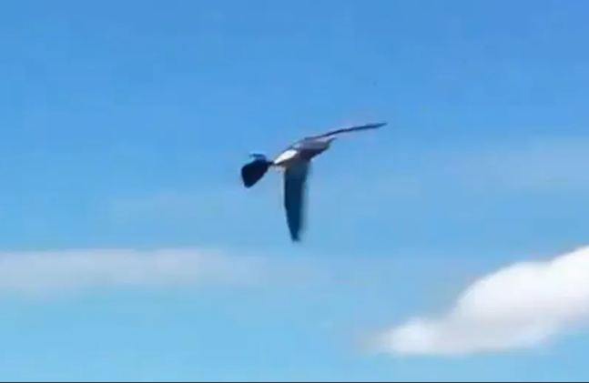
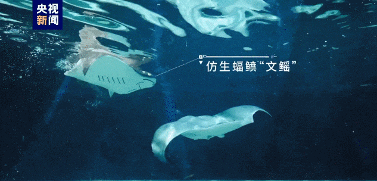
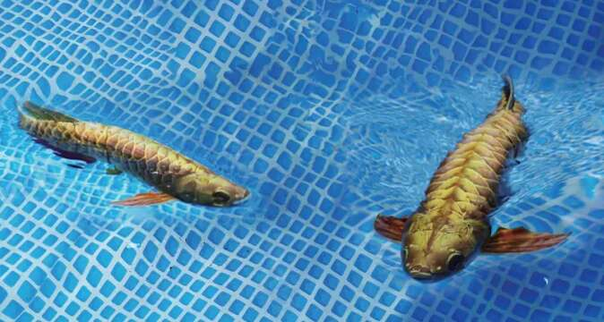

中国海军陆战队的特种部队“蛟龙突击队”使用仿真鸟外形的侦察无人机，让外国军事观察家们再度破防了——都知道中国是无人机大国，但估计他们真是没有想到，解放军已经把无人机搞出了这么多花样。看着“蛟龙突击队”投掷多型外形与小鸟高度相似的仿生扑翼无人机时，美国“动力”网站不由得感叹称，这一切就如同是从好莱坞动作片里直接截取的。
或者说得更直白点，解放军特种部队已经将美国科幻动作片里的场景，带入了现实生活中。


报道称，“蛟龙突击队”使用仿生鸟类扑翼无人机的视频在社交媒体上广泛传播。其中一段视频显示，一名中国特种部队成员在看似市政公园的水中发射了一架仿生无人机，它的大小介于鸽子和麻雀之间。在另一段视频中，一名突击队员使用了一种体型更大的无人机，体型更接近乌鸦或鹰。这些视频以及网上出现的其他视频还显示，蛟龙突击队也在使用外形更传统的四轴无人机，并驾驶电动的滑板和冲浪板。

笔者注意到，其实这些视频都来自解放军新闻传播中心举办的“枪王挑战赛”，来自不同军种的特种部队展示各自军种特色的射击项目。“蛟龙突击队”从靠近岸边的水中探出身，并释放了一架小型扑翼无人机，外形与鸽子非常类似，它拍打着翅膀在空中盘旋并飞走了。别说老外了，笔者看到这一幕时也反复看了好几次才确认，这的确是一架仿生无人机而不是受过训练的鸽子……
美媒认为，“蛟龙突击队”在解放军中的地位类似美军的“海豹突击队”，曾经在2015年帮助数百名中国人和其他外国人从也门的港口城市亚丁撤离。现实中的“蛟龙突击队”是一支海上特种部队，主要任务是执行海上行动，如登船以及潜水作战任务。不过从部署到亚丁的情况来看，“蛟龙突击队”还接受了执行陆地上各种任务的训练，其中可能包括直接行动突袭和远程侦察。

视频中出现的中国仿生鸟无人机，恐怕谁都难以轻易分辨它的身份
报道认为，在此类作战环境中，仿生鸟类无人机很有价值，可以作为监视敌对势力或秘密获得更好态势感知的一种方式。视频中出现的这两种外形像鸟的无人机都足够大，可以携带一个或多个白天/夜间全动态摄像机，并通过数据链将收集到的影像资料发送回操作手的控制器中，提供持续的本地监视和侦察能力。此外报道还猜测，这些无人机可以携带其他有效载荷，包括微型弹头执行自杀任务，“即使只携带非常小的炸药量，仍然可以对藏在掩体后面的个人产生足够的杀伤效果。”
同时，这些仿生无人机还有一个额外的好处，就是外形与鸟类十分相似，这使得它们特别难以被发现。报道承认，在“蛟龙突击队”的相关视频中，体型较小的那架看起来就像是一只真正的鸟，特别难以用肉眼辨别——这也意味着对手可能根本无法意识到自己处于监视中。它们如果大规模投入实战，恐怕对手很难招架——这类小型且机动性极强的无人机在探测和识别方面已经对常规部队带来了巨大挑战，更不用说试图击落它们了。例如俄乌冲突中，第一人称视角（FPV）自杀无人机和其他低端的武装无人机已经让战场双方都难以招架。
报道称，使用类似鸟类的无人机（以及携带摄像头的真鸟）秘密进行监视和执行其他任务的想法并不新鲜，美国中央情报局在冷战时期就尝试过类似的举动，美国军方和情报界至少从那时起就开始探索仿生无人机。
但问题在于，仿生鸟类无人机虽然看起来很简单，但难度却非常高。首先就是仿生无人机的扑翼设计。从能量利用方面看，扑翼机的效率远高于常规飞行器，理论上相同的电力能保障它飞行更长时间，但扑翼机对于飞行姿态控制、高性能材料等技术的要求非常高，因此美国方面折腾了多年，依然进展迟缓。
而这一切随着中国无人机技术的跨越式发展，得到根本性改变。报道注意到，“蛟龙突击队”新视频中出现的类鸟无人机并不是中国首次发现的此类型号。2022年，中国西北工业大学团队创下无人扑翼机使用单次电池充电的最长飞行时间这一吉尼斯世界纪录，续航时间2小时34分38秒，后来该团队的另一种类鸟扑翼无人机以3小时5分钟30秒再次打破记录。


中国仿生机器鱼高度模拟金龙鱼，可以执行多种水下任务
更让美国军方挠头的是，除了类鸟无人机外，中国也在发展其他的仿生无人装备，它们可用于陆地和海上、水下。笔者之前在多个展会上就曾看到，中国展出的仿生金龙鱼水下机器人，外形和游泳姿态几乎与真鱼无法区分。显然，这些仿生机器人在未来的冲突中可以发挥诸多作用——“动力”网站成人，这些高度仿真的无人装备，结合微型传感器和其他新发展的进步，将为解放军带来真正的作战优势。
但正如笔者所言，中国无人装备取得的这一系列成果，是基于中国制造业全面更新迭代的基础上，没有发达的电子产业、新型材料、高能量密度电池和电机、飞行控制软件等分系统的协同发展，也就不可能出现如今这些真假难辨的仿生机器人的集体涌现。由此也就很好理解，为何美国军方和情报部门在相关领域研制多年，却迟迟没有进展的原因了——美国如今的制造业衰退到难以维系大规模制造无人机的产业链，在民用无人机领域完全无法与中国的大疆等无人机企业相提并论，实质上已经失去了研制更新型无人机的产业基础。